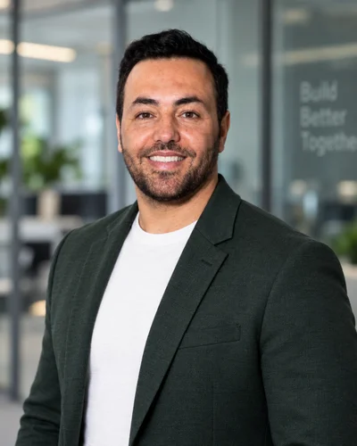
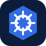
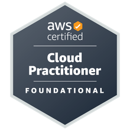

شناخت نیازهای روزمره
از آمادهسازی دستگاه تا بررسی اختلال، با عملیات محیط کار دیجیتال آشنا هستم و میدانم مشکلات فنی چگونه بر کاربران و تیمهای دیگر تأثیر میگذارند.
برلین، آلمان
مهندس رایانش ابری
AWS و Azure · DevOps · اتوماسیون

با گواهینامه AWS Certified Solutions Architect – Associate، تجربه فناوری اطلاعات سازمانی را با پروژههای AWS، مهاجرت به Azure و اتوماسیون ترکیب میکنم.
دوره تماموقت مهندسی AWS و DevOps در Clarusway در حال انجام است.
01 / درباره من
تمرکز من مهندسی رایانش ابری با AWS و Azure، DevOps و اتوماسیون است. گواهینامه AWS Certified Solutions Architect – Associate و مدرک IHK در توسعه نرمافزار دارم. تجربه فناوری اطلاعات سازمانی را با پروژههای شخصی AWS، مهاجرت تکمیلشده SQL به Azure و آموزش جاری AWS و DevOps در Clarusway گسترش میدهم.
از آمادهسازی دستگاه تا بررسی اختلال، با عملیات محیط کار دیجیتال آشنا هستم و میدانم مشکلات فنی چگونه بر کاربران و تیمهای دیگر تأثیر میگذارند.
اسکریپتهای PowerShell را اصلاح کردهام و با Power Automate در فرایندهای ورود و خروج کارکنان و انتقال دادههای خدمات و داراییها همکاری داشتهام.
عیبیابی ساختاریافته، مستندسازی روشن و هماهنگی با تیمهای تخصصی به قابلفهم شدن تحویل کارها و فرایندهای تکراری کمک میکند.
از ژوئن ۲۰۲۴ تا ژوئن ۲۰۲۶ در پشتیبانی از محیطی تحت مقررات بانکی با بیش از ۴۰۰۰ کاربر و ۸۰۰۰ دستگاه مشارکت داشتم. این اعداد اندازه محیط تحت پوشش تیم را نشان میدهند، نه مسئولیت انفرادی من برای همه سیستمها.
02 / مهارتها
گواهینامه AWS، تجربه پروژهای Azure و سابقه فناوری اطلاعات سازمانی پایه مهارتهای من هستند. DevOps، زیرساخت بهصورت کد و کانتینرها را در آموزش و تمرینهای شخصی گسترش میدهم.
پشتیبانی ویندوز و Microsoft 365، چرخه عمر دستگاهها و فرایندهای مرتبط با Intune و MDM. تجربه Active Directory و Entra ID در حوزه پشتیبانی و فرایندهای هویت و دسترسی.
اصلاح اسکریپتهای PowerShell و ایجاد بخشهای جدید؛ استفاده از Power Automate برای کارهای تکراری. رسیدگی به رخدادها و درخواستها با ServiceNow و Jira.
مهاجرت پایگاه داده SQL به Azure در پروژه پایانی IHK و ساخت برنامههای وب شخصی. از Git/GitHub و ابزارهای هوش مصنوعی برای نمونهسازی و عیبیابی استفاده میکنم.
دارای گواهینامه AWS Certified Solutions Architect – Associate از اکتبر ۲۰۲۶. در دوره تماموقت و تمرینهای شخصی با AWS، لینوکس، شبکه، Terraform، Docker، Kubernetes و CI/CD کار میکنم؛ پروژههای AWS من کاربرد عملی این مهارتها را نشان میدهند.

Kubernetesهمچنین در حال توسعه: مدیریت Windows Server و Active Directory، پایتون، Bash، REST API، JSON/YAML و n8n.
از OpenAI Codex و Claude Code برای یادگیری، نمونهسازی و عیبیابی پروژههای شخصی استفاده میکنم. کد تولیدشده نقطه شروع است؛ فهمیدن روش، بررسی نتیجه و آزمایش رفتار برنامه بخشی از کار هستند.
03 / پروژهها
پروژههای شخصی مکمل تجربه شغلی من هستند. وضعیت فعلی و هدف هر پروژه بهروشنی مشخص شده است.
دستیار شخصی مسیر شغلی و درخواست استخدام با بارگذاری رزومه، تحلیل مهارت مبتنی بر شواهد، قطبنمای شغلی، مقایسه فرصتها و آمادهسازی امن مدارک در حسابهای کاربری جداگانه.
نسخه بتای عمومی با ورود از طریق ایمیل؛ ورود با Google فعلاً در حالت آزمایشی محافظتشده است. رزومهها و اطلاعات درخواست هر کاربر در حساب خصوصی خودش باقی میماند و هیچ درخواستی بهطور خودکار ارسال نمیشود.
پروژه پردازش دادههای بازار با پردازشگرهای پایتون، Docker، AWS S3 و Fargate. تمرکز بر ذخیرهسازی، پردازش دستهای و ادامه کار پس از قطع اجرای پردازشهاست.
نسخه عمومی نمونهکار شامل کد و مستندات معماری است. دادههای خام خصوصی و اطلاعات دسترسی منتشر نشدهاند؛ این یک پروژه پژوهشی است، نه سرویس معاملاتی عملیاتی.
کد و مستنداتپروژه پایانی IHK من: برنامهریزی، پیادهسازی و آزمایش مهاجرت یک پایگاه داده SQL به Azure، با استفاده از PowerShell برای مراحل تکرارپذیر مهاجرت و بررسی.
نشاندهنده برنامهریزی مهاجرت، اعتبارسنجی و مستندسازی پروژه است. سیستمهای کارفرما و اسناد داخلی پروژه محرمانه باقی میمانند.
سوابق حرفهاینمونه اولیهای با کمک هوش مصنوعی برای اسناد، یادآورها و سازماندهی امور شخصی. در این پروژه مسیر تبدیل یک برنامه وب کاربردی به سرویس مبتنی بر AWS را بررسی میکنم.
نمونه وب در دسترس است. اجزای بکاند AWS آماده شدهاند، اما استقرار کامل عملیاتی و اعتبارسنجی آن هنوز انجام نشده است.
داشبورد مالی شخصی برای درآمد، هزینه، دارایی و بودجه خانواده، با تمرکز بر نمای روشن و کاربری ساده.
پروژه شخصی با رویکرد ذخیرهسازی محلی که توسعه وب و فرایندهای کاربرمحور را نشان میدهد و از سابقه شغلی سازمانی من جداست.
04 / سوابق کاری
ابتدا مأموریت از طریق Richard H. Gruber Consulting؛ استخدام داخلی در ING از ۱ اکتبر ۲۰۲۴.
کارآموزی در چارچوب دوره بازآموزی حرفهای.
پشتیبانی سطح اول و دوم برای ویندوز، سختافزار، شبکه و تجهیزات جانبی. عیبیابی نظاممند، آموزش کاربران و مستندسازی پشتیبانی.
05 / تحصیلات
مدرک IHK در توسعه نرمافزار. پروژه پایانی: مهاجرت پایگاه داده SQL به Azure با استفاده از PowerShell.

گواهینامه AWS
 کسبشده · ۳ اکتبر ۲۰۲۶
کسبشده · ۳ اکتبر ۲۰۲۶
گواهینامه طراحی راهکارهای امن، تابآور، پربازده و بهینه از نظر هزینه در AWS؛ صادرشده توسط Amazon Web Services Training and Certification.

AWS Certified Cloud Practitioner
هدف دریافت گواهینامه · هنوز کسب نشده
Azure Administrator Associate
هدف دریافت گواهینامه · هنوز کسب نشدهAzure AI Apps and Agents Developer Associate
هدف دریافت گواهینامه · هنوز کسب نشدهClarusway GmbH
مه ۲۰۲۶ تا نوامبر ۲۰۲۶
دوره آموزش تخصصی تماموقت با ۱۰۰۰ واحد آموزشی در AWS، لینوکس، شبکه، اتوماسیون و پروژههای عملی. برنامه آموزشی شامل Terraform، Docker، Jenkins، Kubernetes، CI/CD، پایش و پروژههای پایانی است.
FORUM Berufsbildung e.V., Berlin
اوت ۲۰۲۱ تا ژانویه ۲۰۲۴
دوره بازآموزی حرفهای و مدرک IHK تکمیل شده است. برنامهنویسی، SQL، یکپارچهسازی سیستم و مستندسازی پروژه؛ پروژه پایانی مهاجرت SQL به Azure.
FernUniversität in Hagen
از اکتبر ۲۰۲۵
تحصیل جاری در پایگاه داده، مدیریت فناوری اطلاعات، تحلیل فرایند و فرایندهای دیجیتال کسبوکار. مدرک کارشناسی هنوز تکمیل نشده است.
School of English, Berlin
فوریه ۲۰۲۴ تا مه ۲۰۲۴
ارتباطات تجاری و نگارش حرفهای.
دانشگاه علم و فناوری، ایران
سپتامبر ۲۰۱۰ تا ژوئن ۲۰۱۳
پیشینه تحصیلی در الکترونیک صنعتی، مدارهای الکتریکی، اتوماسیون و مدیریت پروژه و کیفیت.
آلمانی C2 · انگلیسی B2 · کردی زبان مادری · فارسی C2 · دری C1
06 / تماس
به دنبال مهندس رایانش ابری با گواهینامه AWS، تجربه پروژهای Azure و سابقه فناوری اطلاعات سازمانی و اتوماسیون هستید؟ درباره نقشهای رایانش ابری، DevOps و اتوماسیون در تیم شما گفتوگو کنیم.
ساکن برلین · آماده گفتوگو درباره نقشهای حضوری، ترکیبی و دورکاری.